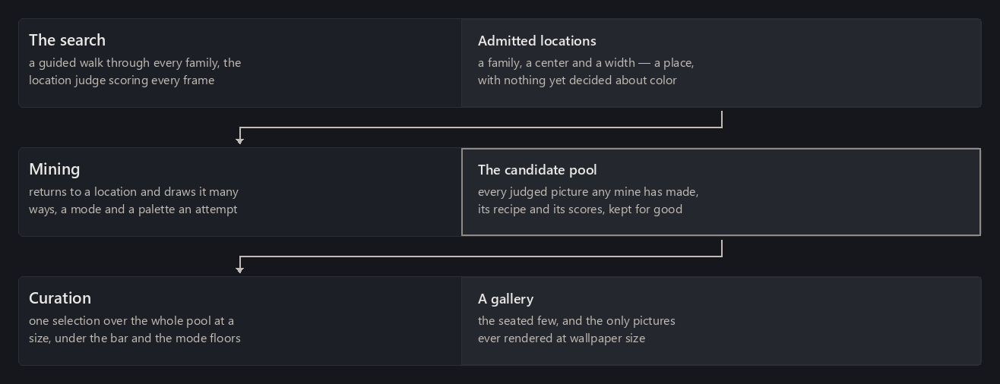
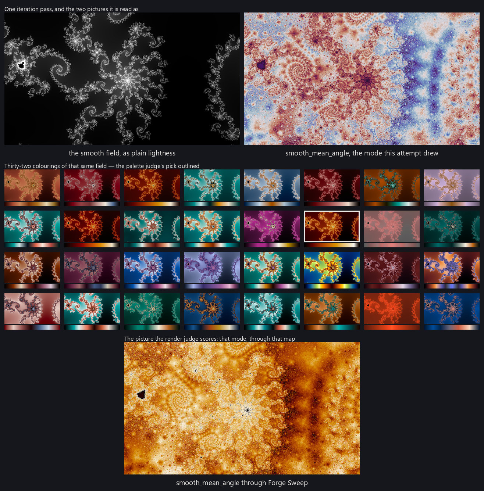

Finding good locations ends with a stock of admitted locations: frames the search thought were worth looking at, each rated once by the location judge, none of them yet drawn as anything a person would want on a screen. A location is not a wallpaper. It is a place, and the same place can be beautiful in one rendering mode and dull in another, striking in one palette and muddy in the next. Turning a stock of places into a stock of pictures is its own problem, and it is where most of the project's rendering time goes.

What one attempt is
The unit of work is an attempt, and every attempt is the same four steps.
The location's smooth field is computed once, at a small size — 640 by 360, the geometry the judges were trained at. A rendering mode turns that field into a picture, as rendering modes described. The thirty-two-palette neighborhood from color palettes is built and the palette judge picks one. The picture is drawn at that size with two-by-two supersampling, and the render judge scores it.
What that produces is a candidate: one location, one mode with its settings, one palette, the judge's scores, and the small picture itself. An attempt takes a few seconds. Everything else on this page is about which attempts to make.
One economy shapes the whole thing. For the modes that read a single scalar field, the field can be computed once and then colored many times over, so a second look at the same place in the same mode costs almost nothing beyond the coloring. The composite modes, the direct traps, and the mode that shifts where each sample reads in the map build their pictures differently and have to be drawn in full each time. That is a real difference in what a look costs, and it is a fact to price rather than a reason to prefer one kind of picture over another.

The pool
Candidates accumulate. Every attempt any mine has ever made joins one pool that nothing later discards, and a gallery is chosen out of the pool as it stands rather than out of any one session's work.
Keeping that pool separate from the mining that fills it is what makes the arrangement work. Locations are cumulative — a place found once is found for good — and pictures are cumulative too. A mine is free to spend its whole budget on one question, because it is adding to a store rather than producing a collection.
Deepening a location
A location that has been looked at once has been looked at in one mode, through one palette the palette judge liked. That is enough to know the place is worth something. It is not enough to have found its picture.
So a mine returns. At a chosen location it computes the field, then works through a few dozen candidates there: modes cycled so no one mode takes the whole visit, palettes drawn without repeating within a mode, so that no two candidates at that place are the same recipe. Only the best few survive — see below — but the point of the visit is to see the place several ways before deciding what it is.
The plan for a mining session is fixed before the first picture is drawn. Nothing reads a score partway through and changes what it renders next. That is deliberate: a loop that chases its own early results is a loop whose output cannot be read as a sample of anything, and the whole value of the pool is that its rows mean the same thing whenever they were made.
Figure pendingOne location visited: its computed field, then a few dozen small renders of that location across several rendering modes and palettes, each labeled with the judge's score, and the few that are kept outlined.
Where the budget goes
Mining time is finite, and how it is spent decides what the collection will be able to contain. The rule is simple: mine until the pool holds what a gallery needs, and let the gallery say when it does not. A general mine draws its modes uniformly over the whole roster, a few at each location it visits. Most of its time goes to the modes that must be drawn in full, because they are most of the roster and each costs several times what a recoloring does — and they are also the ones a gallery is most often short of. When a gallery is chosen and comes up short, the shortfall names the modes, colors and families it lacked (gallery curation), and the answer is to mine longer, not to mine differently.
Two things made that the rule. Mining one short mode on its own moves seats between modes more than it adds them: a location contributes at most one wallpaper to a gallery, so a place seated in one short mode is a place lost to another. And mining only the cheap modes opens new locations without moving a single short mode's floor, because a new location serves a mode only where that mode was attempted. What a gallery is short of is places where the expensive modes have been tried, and the way to get more of them is to try them everywhere. Targeted mining — at one mode, one color, one family — is for a targeted gallery, and full pipeline describes both.
Keeping only what earns its place
A mine that visits a location a few dozen times produces a few dozen pictures of it, and keeping them all would fill a disk with variations nobody will ever choose between. So the pool keeps only the best few candidates per location and mode, ranked among themselves.
Four things protect a candidate the ranking would otherwise drop: it is in a gallery that has shipped, a person has rejected it, a person has rated it, or it is one of the rows the ranking itself was fitted on. Everything else goes, and a picture is kept if and only if its row is — the record and the image are deleted together, so the pool never holds a row pointing at a file that is gone.
How candidates are ranked
Ranking candidates within a location, and later ordering them for a gallery, needs one number, and no single judge's output is that number. The render judge's score at its top threshold is the obvious candidate and is not sufficient on its own: it separates good pictures from bad ones well and, as training judges described, it does not have much resolution left among the good ones.
So the ranking is a fitted combination: the location judge's own opinion of the place, the render judge at both of its thresholds, whether the picture is a composite or a thin-colored one, and a measure of how much of the frame is dead flat space. The weights were fitted on rated pictures and are checked against held-out ratings; the combination orders human judgments meaningfully better than the top-threshold score alone does, on both kinds of picture.
The pictures that make it through all of this are the pool that gallery curation chooses from.